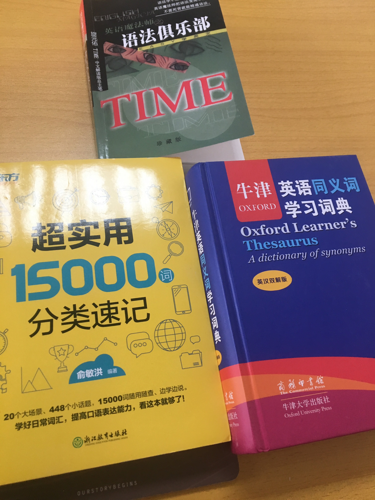
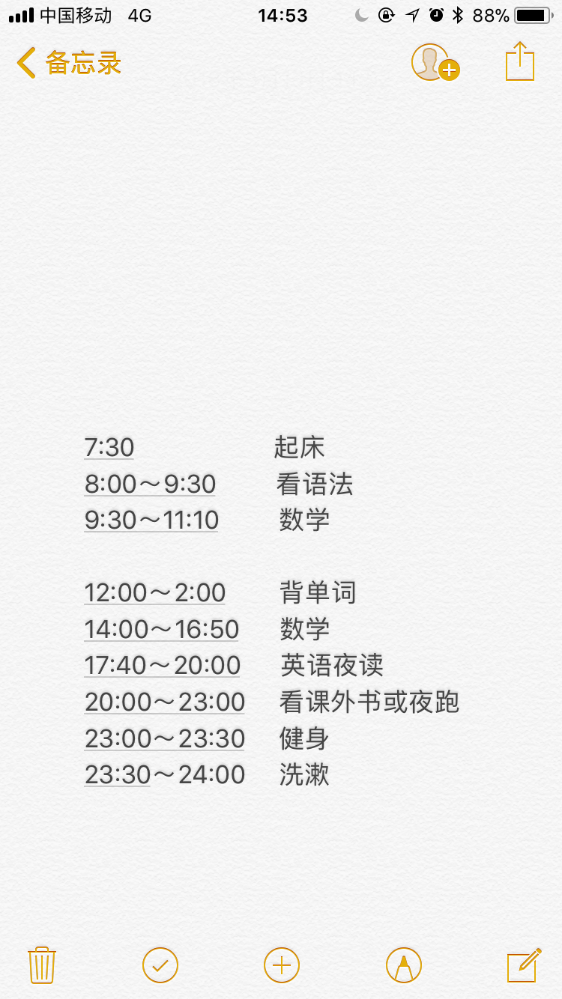
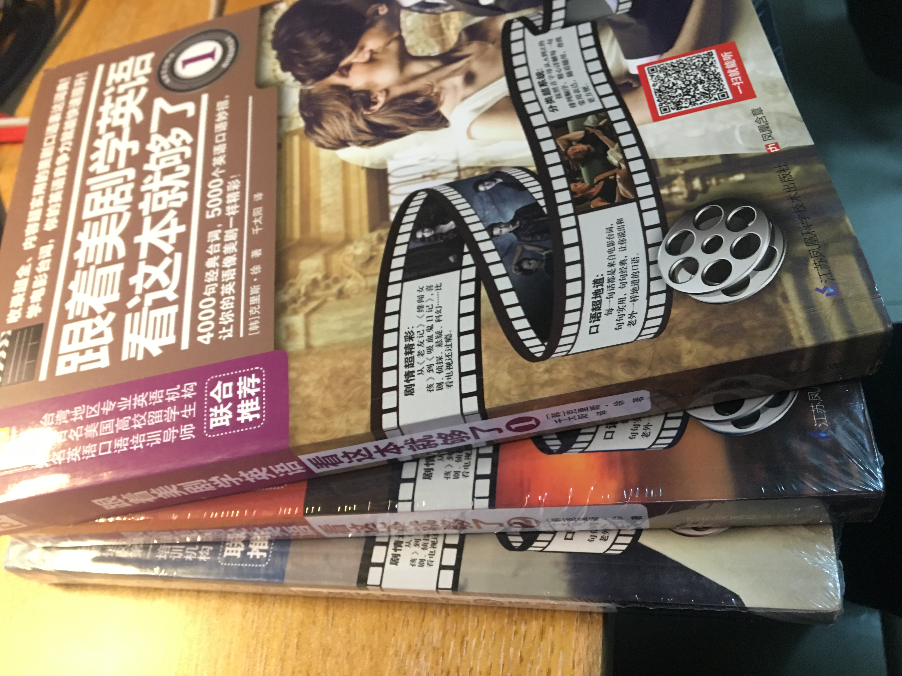
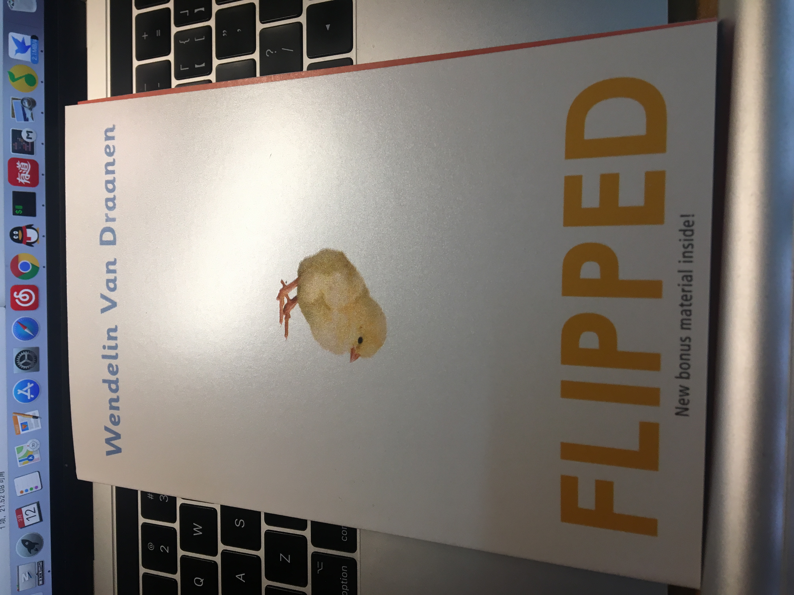

寒假过去了，新的学期开始了。
因为上个学期末不规律的饮食习惯，导致得了胃溃疡，吃药吃了很久。开学第一个星期过的还不错，因为排课少了，所以一个星期有至少5整天没课，所以现在哪怕没课也都是8点到食堂吃早饭，吃完早饭就去自习室安静复习，每天复习数学、做做课后习题，然后剩下点时间背背单词，捡捡语法，做做英语笔记。刚开学就买了很多的英语相关的书：旋元佑的《语法俱乐部》，新东方的《超实用15000分类速记》（因为觉得这种单词分类方式，对记单词和写作文之类的都有帮助，还推荐给了别人，甚至还买来送给了一同考研的老同学），《牛津英语同义词学习词典》（英语的很多词汇翻译出来的中文意思很类似，就是有些用的场景、对象和细节不一样，弄懂了多个单词的区别，也会更容易一起记住这一类词，也是一件很快乐的事，而且考研也会有类似的题目，当然不仅是因为考试需要，更是为了弄懂究竟为什么）。

甚至还有我妹妹送我的生日礼物，一套三本的《跟着美剧学英语》，从上个学期追到现在的《纸牌屋》，超级好看的美国政治争斗剧，不仅让我了解了美国白宫国会的运作模式，大到总统小到国会议员的选举方式，同样也让我学到了单词和口语的句子。
That’s politics. 这就是政治。为了拥有权力，什么都可以舍弃。

每天复习都是什么时候想着复习什么就复习什么，太没有章法了，所有还抽空定了下复习时间，我倒是想把早上时间再定早点，这样可以有个早读，但愿以后能实现吧。 good luck

因为最近英语复习的很多，然后又经常看美剧啥的，就对学英语有了兴趣，觉得比打代码有意思，当然我原先就觉得打代码挺有意思的，特别是在解决难题、做出成品的时候，特别有成就感。 I mean it.
就想找几本英文原版来看看，特别去网上找了推荐书籍，特把链接放在这里
最后选了一本 《FLIPPED》（《怦然心动》）,打算好好把这本书啃下来。

最后把之前寒假没看完的《未来简史》看看玩。

I will move on